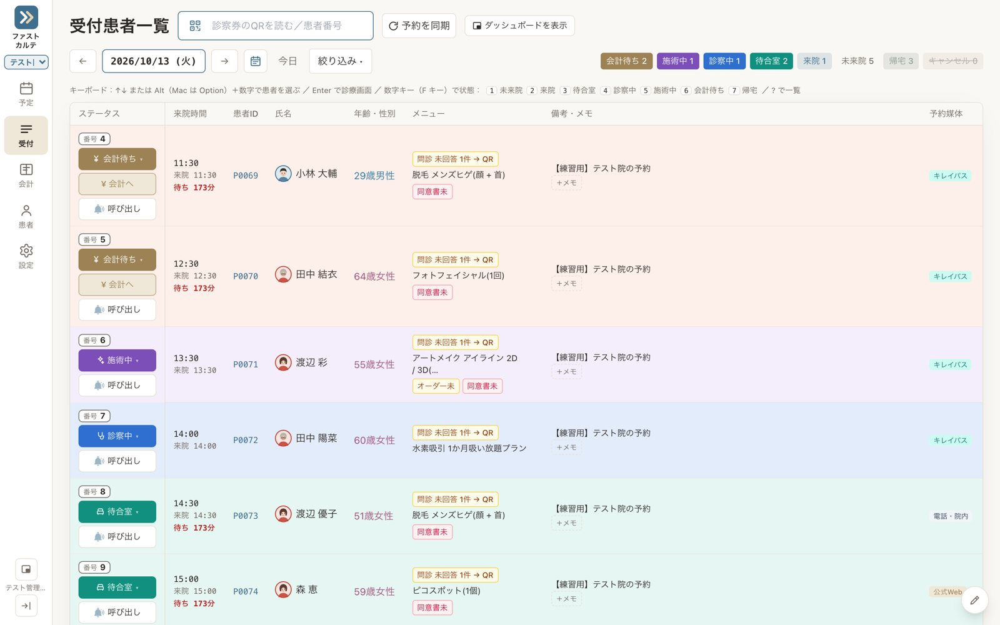
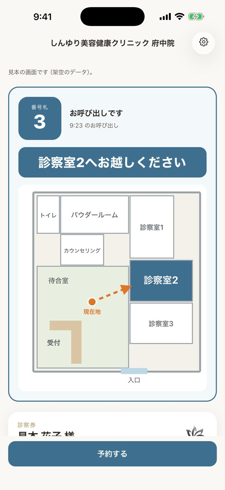
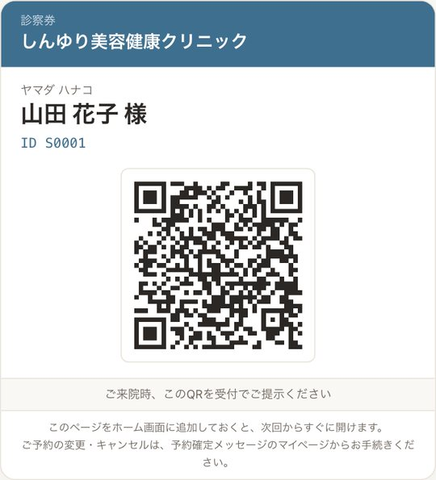
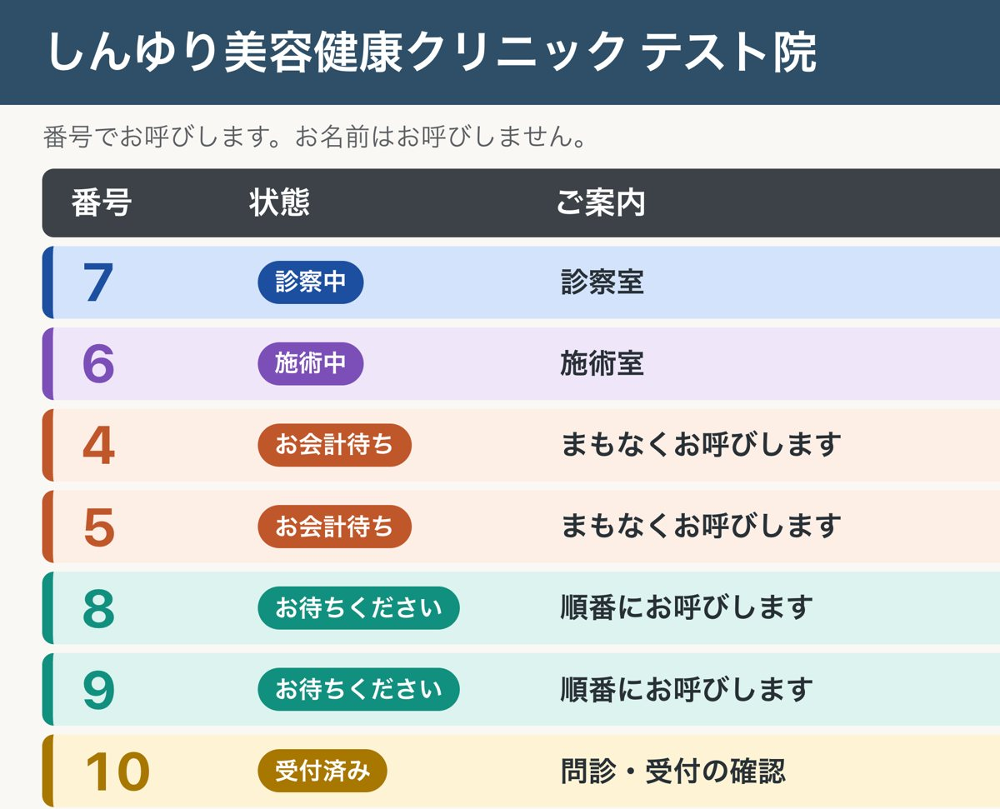

受付で番号札を印刷し、受付の画面から呼び出すと、待合室のモニターと音声で番号と行き先の部屋を案内します。患者さんのスマホにも呼び出しが届きます。モニターにも呼び出しの音声にも、患者さんの名前は出しません。いまのカルテのまま、この仕組みだけを入れることもできます。

受付から診察室・施術室へのご案内は、診療のあいだ何度も繰り返す仕事です。待合で名前を呼んで案内するやり方では、受付にも患者さんにも、次のような困りごとが出てきます。
待合で名前を呼ぶと、その場にいるほかの患者さんにも聞こえます。
呼ばれても聞こえない、自分の番が分からない。
声だけの呼び出しでは、聞き逃した患者さんを呼び直すことになります。
呼ばれたあと、診察室・施術室のどこへ向かえばよいか迷うと、スタッフが案内に出ることになります。
診察中・施術中・お会計待ちの患者さんを、受付が頭の中や紙で追うことになります。
番号札・受付の画面・待合室のモニター・患者さんのスマホをつないで、受付からお呼び出しまでを番号で進めます。どれも、実際の院で困ったことがきっかけで入れた機能です。
受付で番号札を印刷します。番号札には、本人の診察券のQRコードを印字し、お名前は印字しません。患者さんがスマホで読むと、その方のWeb診察券が開きます。
番号札、状態（会計待ち・施術中・診察中・待合室）の切り替え、呼び出しを1つの画面で行います。Alt＋数字で患者を選び、数字キーで状態を変えます。
モニターには、番号と状態（診察中・施術中・お会計待ちなど）を色で分けて表示します。お呼び出しは音声でも案内し、番号と行き先の部屋をお伝えします。
呼び出しは、患者さんのスマホにも届きます。Web診察券の画面にも出ます。院名入りの公式アプリ（iPhone、院ごとにお見積もり）では、番号と行き先の部屋を院内の地図で示します。
待合室のモニターにも、呼び出しの音声にも、患者さんの名前は使いません。
ホットペッパー・キレイパス・トリビューの予約も、院の24時間Web予約も同じ台帳に入り、受付・カルテ・会計までつながります。予約の一元管理について
院名入りの公式アプリと、アプリが無くても使えるWeb診察券。待合室のモニターと合わせて、受付からお呼び出しまでを、名前を呼ばずに進められます。


ご来院前のお願い（問診・同意書）も、この画面から開けます。

カルテを入れ替えなくても、番号札・呼び出し・待合モニターだけを導入できます。いまのカルテや予約システムはそのままに、つなぎ方は院の環境を見て決めます。カルテごと切り替える場合、番号札の印刷・待合モニター・呼び出しは、スタンダード以上のプランに含まれます。院名入りの公式アプリは、院に合わせた仕組みづくりとして別にお見積もりします。
番号札の印刷、受付からの呼び出し、待合のモニターと音声の案内、患者のスマホへの通知。患者さんの名前を呼ばずにご案内できます。
9,800円/月から
導入費 29,800円から
電子カルテ・予約台帳、会計・回数券、電子同意書に加えて、予約サイトの自動取り込み、Web予約・LINE、番号札・待合モニター・呼び出し、診察券・Web問診が入ります。
39,800円/月
導入費 98,000円（年払い・12か月契約なら0円）
表示は1院あたり・税抜の目安です。いまのシステムとのつなぎ方（予約データの取り込み、受付での入力など）は、院の環境を見てご提案し、導入費もつなぎ方に合わせてお見積もりします。ほかのプランと条件は料金をご覧ください。
しんゆり美容健康クリニック 府中院
東京都府中市（2026年11月開院）
開発者の鈴木が勤務する院です
府中院は開院準備の段階から導入し、予約・受付・番号札・呼び出し・カルテ・会計までをファストカルテで行っています。
受付のキー操作や待合の読み上げは、開院準備のなかでスタッフの声を聞いて加えたものです。
できます。受付で番号札を印刷し、番号札には本人の診察券QRを印字します。受付の画面から呼び出すと、待合室のモニターと音声で番号と行き先の部屋を案内し、患者さんのスマホにも呼び出しが届きます。院名入りの公式アプリでは、行き先の部屋を院内の地図で示します。モニターには番号と状態（診察中・施術中・お会計待ちなど）を色で分けて出し、名前は出しません。呼び出しの音声にも、患者さんの名前は使いません。開発者が勤務するしんゆり美容健康クリニック府中院では、開院準備の段階から番号札と呼び出しをファストカルテで行っています。
できます。いまのカルテや予約システムはそのままに、番号札・呼び出し・待合モニターだけを導入する方法をご提案します。つなぎ方は院の環境を見て決めます。番号札・呼び出し・待合モニターだけの導入は、月9,800円から、導入費29,800円からです（1院あたり・税抜の目安）。
番号と状態（診察中・施術中・お会計待ちなど）を色で分けて表示します。患者さんの名前は出しません。お呼び出しは音声でも案内します。
使えます。番号札と、待合室のモニター・音声の案内は、スマホをお持ちでない方にもそのまま使えます。アプリを入れていない方は、Web診察券（スマホのブラウザで開く診察券）のQRを見せて受付でき、お呼び出しもWeb診察券の画面に出ます。
変えられます。開発者の医師が受付の流れとスタッフの困りごとを直接うかがい、院のやり方に合わせて作り変えます。府中院の開院準備でも、スタッフの声を聞いたその週のうちに、受付のキー操作や呼び出しの読み上げを変えました。
カルテごと入れ替える場合も、番号札だけ入れたい場合も、いまの受付の流れに合うかどうかを一緒に確認します。